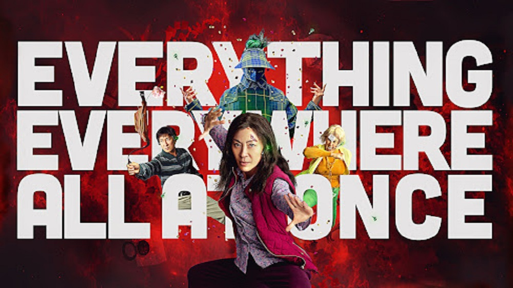

Everything everywhere all at once
Voto: 9.5Questo film sfida i canoni del cinema d'azione e fantastico, portando la narrazione in una dimensione multiversale. Con 10 candidature, vince 7 premi Oscar, di cui uno va all'attrice Michelle Yeoh(nei panni di Evelyn, la protagonista) per miglior attrice protagonista, mentre l'Oscar per miglior attore non protagonista va Jamie Lee Curtis (che interpreta il marito di Evelyn). I colori vivaci e il susseguirsi dei scene che vanno da un universo all'altro riescono a divertiti e ad appassionarti al trama. Per chi sta cercando un film che tratti del multiverso, sicuramente questo è il film giusto da vedere.
Innovativo
Niente di nuovo sul fronte occidentale
Voto: 9La pellicola, terzo adattamento cinematografico dell'omonimo romanzo di Erich Maria Remarque, è stata selezionata per rappresentare la Germania agli Oscar 2023 nella sezione del miglior film internazionale, ricevendo 4 premi su 9 candidature. Tratta delle vicende della Prima guerra mondiale, facendoti immedesimare con i personaggi e con le emozioni che si provavano in trincea. Tanto criticato in Germania quanto apprezzato dall'Accademy, addirittura c'è chi lo reputa il miglior film di sempre sulla Prima guerra mondiale.
Emozionante
Babylon
Voto: 8.5Con solo 3 candidature agli Oscar per miglior colonna sonora, migliore scenografia e migliori costumi, Babylon non vince neanche un premio. La trama racconta degli attori della vecchia Hollywood che vivono il passaggio da cinema muto a cinema sonoro. Il film ha un ritmo incalzante, festaiolo e veloce nella prima parte che rappresenta i migliori momenti delle carriere dei protagonisti, mentre durante la seconda parte rallenta e diventa più tragico quando i personaggi principali si rendono conto che la loro fama è calata. Sicuramente uns grande sconfitta il non aver vinto nessun premio, personalmente ho apprezzato molto la colonna sonora e i costumi, ma evidentemente non sono stati abbastanza per portare il film alla vittoria.
Movimentato
Black Panther: Wakanda Forever
Voto: 7Il film del passaggio di testimone di Black Panther è stato candidato a ben 5 Oscar vincendo l'Oscar ai migliori costumi.
Ultimo film della fase 4 del MCU(Marvel Cinematic Universe) e il sequel di Black Panther del 2018.
Il personaggio principale è la sorella di T'Challa, Shuri, interpretata da Letitia Wright.
Shuri cerca a da tempo di ricreare l'erba che possa creare una nuova Pantera Nera che possa proteggere il Wakanda,
ormai sotto pressione dagli altri paesi che vogliono usufruire del vibranio wakandiano.
La lunghezza dei film Marvel per me ormai è uno dei problemi principali di questa saga cinematografica, il ritmo è lento e dopo un po' stancante.
Mi stupisce sempre vedere un film del genere agli Oscar, ma il premio è sicuramente meritato.
Marvelaino
The Whale
Voto: 4Film con 3 candidature di cui solo 2 categorie vinte con il miglior attore protagonista Brendan Fraser.
La trama è molto tragica, parla di un'insegnante di inglese con problemi di obesità. Non ho apprezzato
come è stata gestita la storia e la sceneggiatura, l'unica cosa degna di nota è l'interpretazione dell'attore protagonista.
Sul finale si riesce anche ad apprezzare un po' il personaggio della figlia del protagonista, Ellie, interpretata da Sadie Sink.
Se si ha voglia di un film drammatico senza neache un attimo di gioia, questo film è molto adatto.
Strappalacrime